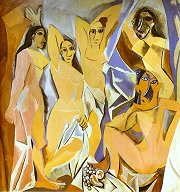
Picasso: Avignonské slečny
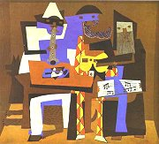
Picasso: Tři muzikanti
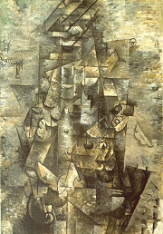
Braque: Muž s kytarou
|
KUBISMUS
První kubistický obraz Avignonské slečny namaloval Pablo Picasso v roce 1907, kontroverzní námět (prostitutky) doprovázela nezvyklá kompozice a negerské masky na obličejích žen. Slovo kubismus bylo původně hanlivým označením pro malíře, kteří prý malovali pouhé krychle (lat. cubus). Ve skutečnosti kubisté navazovali na francouzského malíře Paula Cézanna, který chtěl převést skutečnost na základní geometrické tvary. Francouz Georges Braque [žorž brak] nebo Španělé Pablo Picasso [pikaso] a Juan Gris navíc zobrazovali obejkty jakoby z různých úhlů zároveň. Tuto počáteční fázi nazýváme analytický kubismus. V syntetickém kubismu převládla nad zobrazovanou skutečností geometrizující kompozice obrazu. Někdy malíři nechávali zcela na fantazii diváka, co je na plátně namalováno. Kubisté se také věnovali koláži, asambláži nebo sochařství. Kubistickou etapou prošli např. francouzští malíři Robert Delaunay [delone] nebo Fernand Léger [leže].
V literatuře bývají za kubisty považováni francouzští básníci Guillaume Apollinaire, Max Jacob [žakob], Pierre Reverdy, Blaise Cendrars [bléz sandrár] nebo Jean Cocteau [žan kokto].
V Čechách se ke kubismu hlásila Skupina výtvarných umělců, která působila v letech 1911 až 1914 a vydávala avantgardní časopis Umělecký měsíčník. Patřili k ní malíři Josef Čapek, Václav Špála, Emil Filla nebo Bohumil Kubišta, sochař Otto Gutfreund, architekt Jan Gočár, teoretik a sběratel umění Vincenc Kramář a spisovatelé Karel Čapek nebo František Langer. Někteří z těchto umělců společně vystoupili v ročence Almanach na rok 1914. Ojedinělým fenoménem byla česká kubistická architektura.
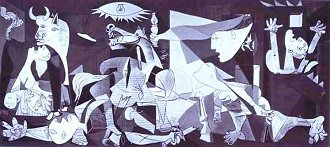
Picasso: Guernica
|
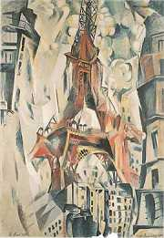
Delaunay: Martovo pole – Eiffelova věž v červené
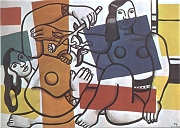
Léger: Dvě ženy s květinou
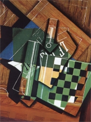
Gris: Šachovnice
|
Guillaume Apollinaire
(1880-1918)
Nejvýznamnější avantgardní spisovatel Guillaume Apollinaire [gijóm apolinér], vlastním jménem Kostrowitzky, se narodil v Římě jako nemanželské dítě. Jeho matka vedla nevázaný život, často se stěhovala, až nakonec zakotvila v Paříži. Také Apollinaire hodně cestoval (navštívil i Čechy). Vymyslel názvy pro surrealismus a orfismus. Nejčastěji bývá označován jako kubofuturista. Po vypuknutí 1. sv. války se dobrovolně přihlásil jako voják na frontu. Byl vážně zraněn a o dva roky později zemřel na španělskou chřipku. Apollinaire napsal básnické sbírky Alkoholy (Pásmo) a Kaligramy,
prózy Zahnívající kouzelník, Kacíř a spol. (Pražský chodec) nebo Ubrousek básníků, román Zavražděný básník a drama Prsy Tiresiovy. Zajímal se rovněž o výtvarné umění. Přátelil se s Picassem a vydal knihy statí Kubističtí malíři nebo Futuristická antitradice.
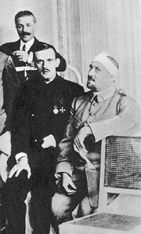
Zraněný Apollinaire s přáteli
|
Guillaume Apollinaire: Alkoholy
Apollinaire začal při psaní používat novou metodu, která byla založena na asociativním řetězení nesourodých témat a představ. Jednotícím prvkem tak zůstal pouze básnický subjekt. Tento tvůrčí postup byl základem polytematické básně Pásmo, která vyšla v jeho sbírce Alkoholy (1913).
Apollinairovo Pásmo velmi ovlivnilo českou avantgardní poezii. Už roku 1919 ho přeložil Karel Čapek. Apollinairovu polytematickou asociativní metodu využil Wolker v básni Svatý Kopeček, Nezval ve skladbách Podivuhodný kouzelník nebo Edison, Biebl v Novém Ikarovi a řada dalších spisovatelů.
Guillaume Apollinaire: Kaligramy
Básnická sbírka Kaligramy obsahuje dvacet básní-obrazů. Apollinaire v nich využil svého výtvarného nadání a z vlastních veršů vytvořil „kresby“. Výsledný obraz vždy vychází z námětu básně – Eiffelova věž, vodotrysk, kravata, hodiny, déšť atd. Kniha vyšla roku 1918 a obsahuje i skladby psané tradiční formou (Okna, Pondělí v Kristýnině ulici). Tématem některých z nich jsou Apollinairovy zážitky z války.
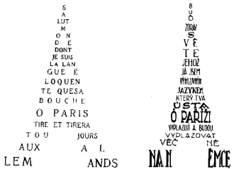
|
Proč Apollinaire nepoužíval interpunkční znaménka?
Proč všechny verše Pásma začínají velkým písmenem?
Kterým tématům se věnuje v první sloce Pásma?
Zmiňuje v Pásmu i Čechy? V jaké souvislosti?
Co tě na Apollinairově básni zaujalo nejvíce?
Čím se Pásmo odlišuje od tvorby moderních spisovatelů – dekadentů, symbolistů, impresionistů nebo civilistů a vitalistů?
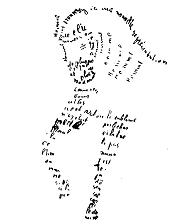
Apollinaire: Kaligramy
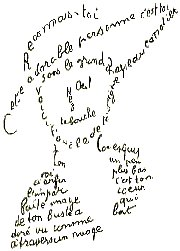
Vysvětli význam slov kaligram a kaligrafie.
Zkus vytvořit vlastní kaligram.
|
Karel Čapek (1890-1938)
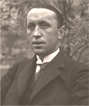
Čapek se narodil v Malých Svatoňovicích a zemřel v Praze. Vystudoval filozofii, estetiku, dějiny výtvarného umění a filologii. Byl stoupencem pragmatismu a zastáncem demokratického zřízení – Hovory s TGM. V jeho domě se scházeli tzv. pátečníci. Přestože se zajímal o avantgardní umění – Francouzská poezie nové doby, nesouhlasil s levicovou ideologií – Proč nejsem komunistou, ke které se mladí tvůrci hlásili. Pracoval jako redaktor v Lidových novinách, byl dramaturgem Vinohradského divadla a založil český PEN-klub. Řadu děl napsal s bratrem Josefem – Krakonošova zahrada, Zářivé hlubiny, Ze života hmyzu. Sám psal povídky – Boží muka, Trapné povídky, Povídky z jedné a druhé kapsy, fejetony – Anglické listy, Zahradníkův rok, úvahy – Marsyas čili Na okraj literatury, O věcech obecných čili Zoon politikon, romány – Továrna na Absolutno, Krakatit, Hordubal, Povětroň, Obyčejný život, První parta, Válka s mloky, divadelní hry – Loupežník, R.U.R., Věc Makropulos, Matka i pohádky – Devatero pohádek, Dášeňka čili život štěněte.
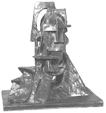
Gutfreund: Kubistické poprsí
|
Karel Čapek: Boží muka
Čapkovu sbírku Boží muka otevírá povídka Šlépěj, která se v přepracované verzi a pod obměněným názvem Šlépěje objevila v knize Povídky z jedné kapsy. V obou povídkách využil Čapek kubistický způsob nazírání na nějaký objekt. Tím jsou stopy ve sněhu, které náhle končí. Lidé, kteří si této záhady všimnou, se marně pokoušejí najít nějaké racionální vysvětlení. Každý se na problém dívá z jiného úhlu a nabízí odlišné řešení. Žádné z nich ale není definitivní.
Karel Čapek: Život a dílo skladatele Foltýna
Poslední Čapkův román Život a dílo skladatele Foltýna zůstal nedokončen. Je zajímavý především metodou vyprávění, kdy je hlavní postava – netalentovaný umělec Foltýn posedlý utkvělou představou napsat operu – nazírána z pohledu svých přátel, manželky a dalších lidí. Čapek z těchto promluv složil mozaiku individuálních pohledů na jednoho člověka. Foltýn se každému jeví trochu jinak, ale čtenář si může udělat plastický obrázek o jeho skutečné povaze.
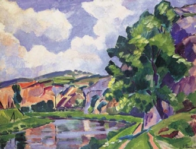
Špála: Na Berounce u Srbska
|
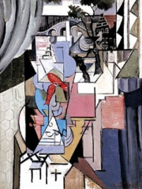
Filla: Zlaté rybičky u okna
Srovnej Čapkovy povídky Šlépěj a Šlépěje.
Jak bys vysvětlil/a záhadu náhle končících stop ty?
Jaký je podle tebe Foltýn?
Měl se vzdát svého snu složit operu? Proč?
Jaký/á chceš být?
Jak působíš na své okolí?
Jsou lidé, kteří si o tobě mohou myslet pravý opak? Jak k takové situaci došlo? Dá se to napravit? Jak?
Dáš na první dojem?
Co je podle tebe nejdůležitější při komunikaci s ostatními lidmi?
Jaké chování očekáváš od svého životního partnera?
Souhlasíš s názorem „co nechceš, aby ostatní činili tobě, nečiň ty jim“? Napiš na toto téma krátkou povídku.
Čapek využil kubistickou metodu také v tzv. noetické trilogii, kterou tvoří romány Hordubal, Povětroň a Obyčejný život. Co spojuje tyto knihy?
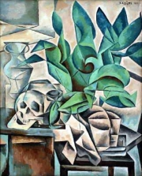
Kubišta: Zátiší s lebkou
|
Internetové stránky
Apollinaire
Apollinaire
Picasso, malíř
Picasso, malíř
Picasso, malíř
Picasso, malíř
Gris, malíř
Delaunay, malíř
Karel Čapek
Exkurze
Muzeum kubismu, Dům U Černé Matky Boží, Praha
Kubistická Praha
Picassovo muzeum, Barcelona
Picassovo muzeum, Paříž
Picassovo muzeum, Malaga
Picassovo muzeum, Madrid

Léger: Chvíle oddechu
|
Doporučená četba
Apollinaire, Guillaume: Alkoholy, přel. P.Kopta, Odeon, Praha 1996
Apollinaire, G.: Alkoholy, přel. Z.Kalista, Vilém Šmidt, Praha 1946
Apollinaire, G.: Alkoholy života, Československý spisovatel, Praha 1965
Apollinaire, G.: Básně – obrazy, přel. J.Konůpek, SNKLU, Praha 1965
Apollinaire, G.: Hudebník ze Saint-Merry, Československý spisovatel, Praha 1981
Antonín Procházka (1882-1945), Tigris, Praha 2002
Čapek, Karel: Boží muka, Trapné povídky, Československý spisovatel, Praha 1981
Čapek, K.: Francouzská poezie a jiné překlady, SNKLHU, Praha 1957
Čapek, K.: Hordubal, Povětroň, Obyčejný život, Československý spisovatel, Praha 1981
Čapek, K.: První parta, Život a dílo skladatele Foltýna, Československý spisovatel, Praha 1981
Dílo Jaroslava Seiferta 2, Akropolis, Praha 2002 (Apollinaire)
Hartwigová, Julia: Apollinaire, přel. V.Zapletalová, Odeon, Praha 1966
Hlušička, Jiří: Emil Filla 1882-1953, Brno 2003
Kramář, Vincenc: O obrazech a galeriích, Odeon, Praha 1983
Nešlehová, Mahulena: Bohumil Kubišta, Odeon, Praha 1984
Lahoda, Vojtěch: Český kubismus, Brána, Praha 1996 (katalog k výstavě)
Lamač, Miroslav: Georges Braque, Odeon, Praha 1983
Penrose, Roland: Picasso, Jeho život a dílo, přel. L.Kovářová, Odeon, Praha 1971
Petrová, Eva: Picasso v Československu, Odeon, Praha 1981
Vallentinová, Antonia: Picasso, přel. O.Kuba, SNKLU, Praha 1965
Warncke, Carsten-Peter: Pablo Picasso, 1881-1973, přel. J.Burkertová, Taschen
|
Vypracuj písemný referát o některé z uvedených knih.
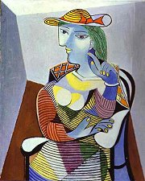
Picasso: Marie-Tereza Walterová
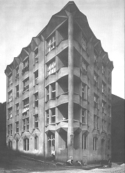
Kubistický dům na pražském Vyšehradě v Neklanově ulici od Josefa Chocholy
|
|